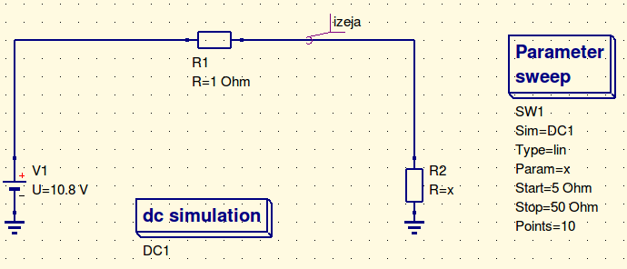
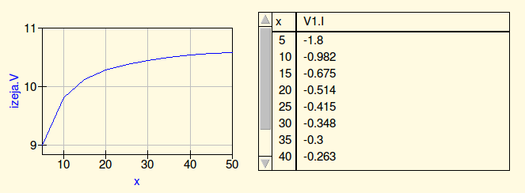

Varianta aprēķins:
Apliecības numurs ir 171REB108. [1] Aprēķinot pēc formulas sanāk ka V1 būs vienāds ar 108/10=10.8 V , R1 būs vienāds ar 0+1 un tas ir R1=1 Oms, un R2=8+1=9 Omi. [2]
| R1 | 1 Oms |
| R2 | 9 Omi |
| V1 | 10.8 V |
| UR1 | 10.8 V |
| UR2 | 9.7 V |
1.1. tabula: datu tabula

1.1. zīm.: shēma ar circuitikz paķeti

1.2. zīm.: plots ar pgfplots paķeti
2.1. zīm.: Shēma veidota ar gschem
* Spice netlister for gnetlist
R2 2 0 9
R1 1 2 1
V1 1 0 10.8
.END

2.2. zīm.: R1 simulācijas grafiks

2.3. zīm.: R2 simulācijas grafiks
2.4. zīm.: Shēma QUCS vidē
2.5. zīm.: Sweep simulacija
2.6. zīm.: Sweep grafiks
[1] 3. Baltakmens, [R. Latvietis un viņa zirgi]. Rīga: Valters un Rapa, 2000. 282 lpp. ISBN 9984-59-540-4
[2] Strazds, M. (red.) [Latvijas ūdeņu putni]. Rīga: Jāņa sēta, 1999. 208 lpp. ISBN 9984-9180-4-1
Pēc manām domām izveidot dokumenta saturu ar html valodu bija daudz grūtāk jo cik es varēju redzēt tur ir daudz vairāk opciju priekš visāda veida vizuāla izklāsta ka arī html mājas lapas veidošana ir ne tik saprotama ka latex dokumenta izveide. Latex piedāvā vieglu veidu kā izveidot dokumentus ar vienoto noformējumu kad html valodā tev vispirms vajag izveidot pašu noformējumu un tikai pēc tam varēsi ievietot kaut ko iekšā lapā.